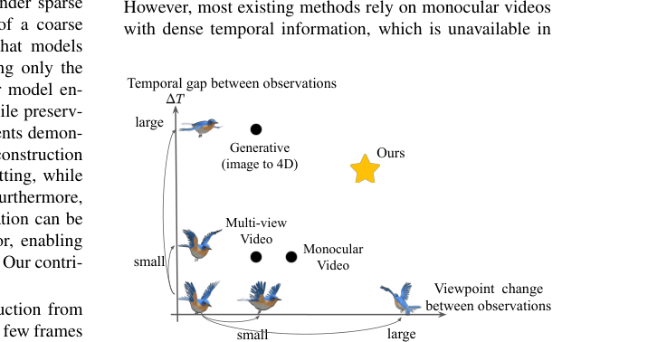

SV-GS
简单摘要
重建大范围移动的动态目标具有挑战性。动态对象重建的标准方法需要在观看空间和时间维度上进行密集覆盖，通常依赖于在每个时间步骤捕获的多视图视频。然而，这样的设置只能在受限的环境中进行。在现实场景中，随着时间的推移，观察结果往往是稀疏的，并且从不同的角度（例如，从安全摄像头）捕获的数据也稀疏，使得动态重建非常不适定。我们提出了一个框架，可以在稀疏观测下同时估计变形模型和物体随时间的运动。为了初始化 ，我们利用粗略的骨架图和初始静态重建作为输入来指导运动估计。
（稍后，我们表明可以放宽此输入要求。）我们的方法优化了由粗略骨架关节姿态估计器和细粒度变形模块组成的骨架驱动变形场。通过仅使关节姿态估计器与时间相关，我们的模型可以实现平滑的运动插值，同时保留学习的几何细节。对合成数据集的实验表明，我们的方法在稀疏观测下的 PSNR 性能优于现有方法高达 34%，并且尽管使用的帧数明显减少，但在真实数据集上实现了与密集单目视频方法相当的性能。此外，我们证明输入初始静态重建可以用基于扩散的生成先验代替，使我们的方法对于现实场景更加实用。


简而言之，这篇论文关注的核心是：重建大范围移动的动态目标具有挑战性。动态对象重建的标准方法需要在观看空间和时间维度上进行密集覆盖，通常依赖于在每个时间步骤捕获的多视图视频。然而，这样的设置只能在受限的环境中进行。在现实场景中，随着时间的推移，观察结果往往是稀疏的，并且从不同的角度（例如，从安全摄像头）捕获的数据也稀疏，使得动态重…
从图像重建动态目标是一个长期存在的计算机视觉问题，在运动分析、AR/VR 和动态场景理解中都有应用。虽然最近在神经和基于高斯的表示方面取得的进展已经显示出令人印象深刻的结果，但大多数方法依赖于具有密集时间覆盖的单目或多视图视频，其中提供了丰富的运动线索和对应关系。然而，在现实世界中，这种密集的观察并不总是可以实现的。例如，监控摄像头通常会随着时间的推移稀疏地捕捉移动物体，尤其是在杂乱的环境中。此外，当多个摄像机可用时，它们的视点可能会有很大差异，并且观察到的目标可能会在观察之间表现出显着的运动和自遮挡。
在这种情况下，很难建立时间对应关系，因为稀疏观察中的外观可能会发生巨大变化，使得动态重建非常不适定。在本文中，我们解决了从稀疏时间观察中进行关节动态重建的这一具有挑战性的设置，其中只有一些来自任意视点的姿势图像可用，如 dyn_img:teaser 中所示。为了解决这个高度不适定的问题，我们考虑了一个可以访问附加结构信息的设置。最初，我们假设粗略的骨架图和第一帧的静态重建是可用的。初始重建可以从标准多视图设置获得。
稍后在 dyn_sec:diffusion 中，我们将展示如何通过仅使用单个图像的预训练生成模型来放松这一假设。尽管有这些附加信息，任务仍然很困难，因为输入不会产生完整的装配模型——骨架注释可能有噪声，并且仅包含节点位置和连接性，而关节姿势、蒙皮权重和点到部分关联仍然未知。我们提出，在给定输入骨架图和初始静态重建的情况下，学习骨架驱动的变形场，该变形场在稀疏监督下对相干运动进行建模。我们的变形场由粗略的骨架关节姿态估计器和模拟细粒度运动变形的模块组成。
通过仅允许关节姿态估计器与时间相关，我们的模型可以实现平滑的测试时运动插值，同时保留学习到的局部变形细节。实验表明，最先进的（SOTA）动态重建方法在这种稀疏设置中显着退化，同时实现了更好的……
核心创新
综合引言与方法部分，这篇论文的核心创新可以概括为以下几方面：
1）问题定义与研究动机
从图像重建动态目标是一个长期存在的计算机视觉问题，在运动分析、AR/VR 和动态场景理解中都有应用。虽然最近在神经和基于高斯的表示方面取得的进展已经显示出令人印象深刻的结果，但大多数方法依赖于具有密集时间覆盖的单目或多视图视频，其中提供了丰富的运动线索和对应关系。然而，在现实世界中，这种密集的观察并不总是可以实现的。例如，监控摄像头通常会随着时间的推移稀疏地捕捉移动物体，尤其是在杂乱的环境中。此外，当多个摄像机可用时，它们的视点可能会有很大差异，并且观察到的目标可能会在观察之间表现出显着的运动和自遮挡。在这种情况下，很难建立时间对应关系，因为稀疏观察中的外观可能会发生巨大变化，使得动态重建非常不适定。在本文中，我们解决了从稀疏时间观察中进行关节动态重建的这一具有挑战性的设置，其中只有一些来自任意视点的姿势图像可用，如 dyn_img:teaser 中所示。为了解决这个高度不适定的问题，我们考虑了一个可以访问附加结构信息的设置。最初，我们假设粗略的骨架图和第一帧的静态重建是可用的。初始重建可以从标准多视图设置获得。稍后在 dyn_sec:diffusion 中，我们将展示如何通过仅使用…
2）方法框架与核心模块
我们的目标是从稀疏的时间观察中重建一个铰接的动态目标，其中每个时间步仅包含从任意视点捕获的单个姿势图像。我们提出 ，它假设访问骨架结构作为输入。骨架指定节点的 3D 位置及其父子连接，这可以通过人工注释获得或使用现成的方法估计。如 dyn_img:method 中所示，从构建目标的初始静态 3D 重建开始。然后我们学习一个骨骼驱动的变形场，在稀疏时间监督下模拟随着时间的推移连续的关节和运动。场景表示初始静态 3D 高斯。我们采用 3D 高斯分布 (3DGS) 作为我们的场景表示，因为它具有快速的优化速度和明确的、物理上可解释的参数化。 3DGS 表示具有高斯基元集合的场景，其中每个高斯由一个中心、一个用四元数表示的旋转矩阵、一个缩放向量、一个不透明度值以及一组确定与视图相关的颜色的球面谐波系数来定义。给定相机姿势，我们可以从 渲染图像，其中像素颜色是通过沿光线方向的 - 混合来确定的：其中 k 是沿观察方向按深度排序的高斯指数，并且是根据球谐系数评估的与视图相关的颜色。该值是通过从 3D 空间到 2D 平面的投影 2D 高斯分布加权的不透明度。在本文中，我们假设初始静态 3DGS 可…
3）实验设计与工程价值
我们首先将我们的方法与稀疏时间观测下新颖视图合成的现有方法进行比较，给定初始状态（dyn_sec：exp_main）的多视图重建。然后，我们证明多视图初始化可以用预先训练的基于扩散的生成模型（dyn_sec：扩散）代替，突出了我们的方法在更具挑战性的场景中的潜力。实验设置数据集。我们的实验主要在三个数据集上进行：D-NeRF、DG-Mesh 和 ZJU-MoCap。排除训练和测试之间具有多个对象或不一致运动的场景后，D-NeRF 包含 6 个合成场景。 DG-Mesh 包括 5 个铰接动物模型的合成序列。我们将时间步标准化为范围，并按一定时间间隔对帧进行均匀子采样，从而得到每个序列的图像观察结果，其中每个观察结果都是在该时间步从任意相机视点捕获的，如 dyn_sec:inputs 中所示。与原始数据集相比，这对应于更少的时间范围。接下来，我们在 ZJU-MoCap 数据集中的 6 个真实…
技术细节
下面按照论文的方法章节结构展开，重点说明模型的关键模块、公式设计和训练策略。
我们的目标是从稀疏的时间观察中重建一个铰接的动态目标，其中每个时间步仅包含从任意视点捕获的单个姿势图像。我们提出 ，它假设访问骨架结构作为输入。骨架指定节点的 3D 位置及其父子连接，这可以通过人工注释获得或使用现成的方法估计。如 dyn_img:method 中所示，从构建目标的初始静态 3D 重建开始。然后我们学习一个骨骼驱动的变形场，在稀疏时间监督下模拟随着时间的推移连续的关节和运动。场景表示初始静态 3D 高斯。我们采用 3D 高斯分布 (3DGS) 作为我们的场景表示，因为它具有快速的优化速度和明确的、物理上可解释的参数化。 3DGS 表示具有高斯基元集合的场景，其中每个高斯由一个中心、一个用四元数表示的旋转矩阵、一个缩放向量、一个不透明度值以及一组确定与视图相关的颜色的球面谐波系数来定义。给定相机姿势，我们可以从 渲染图像，其中像素颜色是通过沿光线方向的 - 混合来确定的：其中 k 是沿观察方向按深度排序的高斯指数，并且是根据球谐系数评估的与视图相关的颜色。该值是通过从 3D 空间到 2D 平面的投影 2D 高斯分布加权的不透明度。在本文中，我们假设初始静态 3DGS 可以从多视图图像或可能从预训练的图像到 3D 扩散模型获得。在多视图设置中，我们遵循标准流程，通过最小化渲染图像和地面实况图像之间的感知损失来优化高斯参数。我们在 dyn_sec:diffusion 中进一步展示了多视图初始化可以用预先训练的生成模型代替。更多详细信息可以在 dyn_sec:diffusion 和补充材料中找到。 6pt 骨架驱动变形。给定初始静态 3DGS 和带注释的骨架图，我们的目标是学习一个变形场，该变形场将初始值转换为与相应稀疏时间步长的观测图像相匹配。此外，学习到的变形可以实现中间时间步骤的连续运动合成，而无需直接观察。
请注意，输入骨架图可能有噪声，并且仅包含节点的 3D 位置及其连接性，没有点到部件的关联或关节参数。为了导出受输入骨架约束的变形，同时保持灵活性以匹配稀疏观察，我们从可学习的线性混合蒙皮（LBS）技术中汲取灵感。具体来说，我们采用 MLP 来对骨架中每个关节的时间相关局部旋转（使用四元数表示）进行建模，以及仅针对根关节的局部平移。其中 表示位置编码 。局部旋转是为局部框架中的每个关节定义的，因此，g…
$$ color = \sum_k c_k \alpha_k \prod_{j=1}^{k-1} (1 - \alpha_j) $$
公式：color = \sum_k c_k \alpha_k \prod_{j=1}^{k-1} (1 - \alpha_j) 上下：_i 1,...,N g_i _i q_i s_i _i sh_i G -沿光线方向混合：其中 k 是沿观察方向按深度排序的高斯指数，并且是根据球谐系数评估的与视图相关的颜色。该值是由投影的二维高斯分布加权的不透明度......
$$ q^t, p^t = MLP_{\Theta}(\gamma(t)) $$
公式：q^t, p^t = MLP_{\Theta}(\gamma(t)) 上下文：灵活匹配稀疏观察，我们从可学习的线性混合蒙皮（LBS）技术中汲取灵感。具体来说，我们采用 MLP 来对骨架中每个关节的时间相关局部旋转（使用四元数表示）进行建模，以及仅针对根关节的局部平移。哪里…
$$ \hat{\mymat{R}^t}, \hat{T^t} = fk(\myset{F}, q^t, p^t) $$
公式：\hat{\mymat{R}^t}, \hat{T^t} = fk(\myset{F}, q^t, p^t) 上下：r根关节。其中 表示位置编码 。局部旋转是为局部框架中的每个关节定义的，因此，给定骨架图中的父子层次结构，我们使用正向运动学计算每个关节的全局变换，其中 和 表示全局旋转（表示......
$$ \mu_i^t = \sum_{j=1}^B w_{i,j}(\hat{\mymat{R}^t_j} \mu_i + \hat{T^t_j}) $$
公式：\mu_i^t = \sum_{j=1}^B w_{i,j}(\hat{\mymat{R}^t_j} \mu_i + \hat{T^t_j}) 上下文：连接到所有子关节。接下来，为了用估计的关节姿势引导高斯基元，我们基于可学习的 LBS 变形导出细粒度运动场。我们首先构造骨骼，其中每个骨骼对应于连接关节及其父级的边缘。规范静态中的每个高斯中心......
$$ w_{i,j} = \frac{\hat{w_{i,j}}}{ \sum_{j=1}^B \hat{w_{i,j}}}, $$
公式：w_{i,j} = \frac{\hat{w_{i,j}}}{ \sum_{j=1}^B \hat{w_{i,j}}}, 上下：可设置蒙皮权重。由于输入骨架可能有噪声并且缺乏蒙皮和变形信息，因此我们将每个骨骼的蒙皮效果建模为规范（静态）状态下的径向基函数（RBF）内核。此外，为了解释输入骨架中的噪声，我们学习了一个位置相关的相关......
$$ \hat{w_{i,j}} = \Delta w_{i,j} \ exp\left(- \frac{d_{i,j}^2}{2r_j^2}\right) $$
公式：\hat{w_{i,j}} = \Delta w_{i,j} \ exp\left(- \frac{d_{i,j}^2}{2r_j^2}\right) 上下文：信息，我们将每个骨骼的蒙皮效果建模为规范（静态）状态下的径向基函数（RBF）内核。此外，为了考虑输入骨架中的噪声，我们也在规范状态下学习了一个与位置相关的校正场。正式地，我们将归一化权重计算为：其中这里 de...


把全文方法串起来看，这篇论文的逻辑基本都遵循同一条主线：先把输入组织成更容易处理的表示，再通过模型结构和损失函数把这个表示推向目标输出，最后用可视化与数值实验共同证明该设计有效。
实验结论
实验部分主要回答两个问题：第一，方法是否真的优于已有基线；第二，这种优势来自哪一个设计决策。
我们首先将我们的方法与稀疏时间观测下新颖视图合成的现有方法进行比较，给定初始状态（dyn_sec：exp_main）的多视图重建。然后，我们证明多视图初始化可以用预先训练的基于扩散的生成模型（dyn_sec：扩散）代替，突出了我们的方法在更具挑战性的场景中的潜力。实验设置数据集。我们的实验主要在三个数据集上进行：D-NeRF、DG-Mesh 和 ZJU-MoCap。排除训练和测试之间具有多个对象或不一致运动的场景后，D-NeRF 包含 6 个合成场景。 DG-Mesh 包括 5 个铰接动物模型的合成序列。我们将时间步标准化为范围，并按一定时间间隔对帧进行均匀子采样，从而得到每个序列的图像观察结果，其中每个观察结果都是在该时间步从任意相机视点捕获的，如 dyn_sec:inputs 中所示。与原始数据集相比，这对应于更少的时间范围。接下来，我们在 ZJU-MoCap 数据集中的 6 个真实序列上评估我们的方法。由于 ZJU-MoCap 包含更长的运动序列和更复杂的运动，因此我们将帧速率下采样到原始帧速率，其中每个时间步长再次从训练视图中任意选择。为了进一步证明我们的方法对野外数据的泛化能力，我们还对 DAVIS 数据集的骆驼场景进行了测试，其中没有提供相机姿态信息。 6 分指标。我们使用三个标准指标来评估新视图合成的质量：峰值信噪比（PSNR）、结构相似性指数（SSIM）和学习感知图像块相似性（LPIPS）。 6pt 实施细节。实验在单个 NVIDIA RTX 4080 GPU 上进行。优化是使用 PyTorch 和 ADAM 优化器完成的。我们设定。我们对每个场景的步骤运行变形场优化，并使用 的估计值初始化骨架图。更多详细信息可以在补充材料中找到。与现有方法合成数据集的比较。大多数现有的动态场景重建方法依赖于单眼视频或多视图视频输入。因此，为了确保在稀疏时间观察设置下进行公平比较，我们仅在初始时间步为所有方法提供相同的多视图姿势图像。我们将我们的方法与 4DGS 、 SK-GS 和 RigGS 进行新颖视图合成任务的比较。
4DGS 在没有任何显式结构约束的情况下学习规范 3DGS 的变形场。相比之下，SK-GS 和 RigGS 共同重建动态目标及其底层运动结构。由于我们的方法需要一个骨架......


- 方法在核心指标上的优势与结构设计和训练目标直接相关；
- 消融实验表明，拿掉关键模块后性能与结果质量都有明显回落；
- 论文不仅比较数值，也关注可视化质量、稳定性和泛化能力等更贴近真实使用的信号。
理解评价
我们提出了一种根据稀疏时间观测重建铰接动态对象的方法。利用粗略的输入骨架和初始静态重建来学习骨架驱动的变形场，该变形场可以模拟跨时间的连贯运动。此外，我们表明，使用预先训练的基于扩散的生成先验可以放松多视图初始化的需求，从而在现实场景中实现动态重建。对合成数据集的实验表明，在稀疏观测下，该方法的 PSNR 性能比现有方法高出 34%，并且即使使用较少的帧，其性能与现实数据集上的密集单目方法相当。虽然我们的方法很有希望，但也有局限性。
基于扩散的初始化在严重的自遮挡或不常见的视点下可能会失败，因为它依赖于通用的预训练模型。此外，测试时插值可能会难以应对高度复杂的运动。未来的一个潜在方向是研究使用特定于类别的先验或基于噪声骨架输入的预训练先验来指导运动估计和重建。
如果把它当成研究参考，建议重点关注三件事：第一，这套方法真正依赖的归纳偏置是什么；第二，实验中真正拉开差距的模块是哪一个；第三，它的局限究竟来自数据、算力还是监督信号本身。
以下相关论文可以作为进一步追踪的入口：